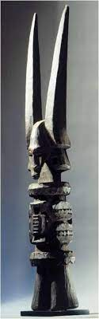

176. Ikenga (shrine figure). Igbo peoples (Nigeria). c. 19th to 20th century C.E. Wood.
- Function and Content
- Ikenga means “strong right arm” and thus physical prowess
- It honors the right hand, which holds tools or weapons, makes sacrifices, conducts rituals, and alerts to speak at public forums
- Ikenga embraces traditional masculine associations of strength and potency
- Often a mix of huma, animal, and abstract forms
- Carved from hardwoods, considered masculine
- It tells of the ownerś morality, prosperity, achievements, genealogy, and social rank
- Context
- Enormous horns symbolize power
- Requires blessings before use; consecrated with offerings before kinsmen
- As the man achieves more success, he might commission a more elaborate version
- It is maintained in the mans's home and is destroyed when the owner dies; another can reuse it if not destroyed